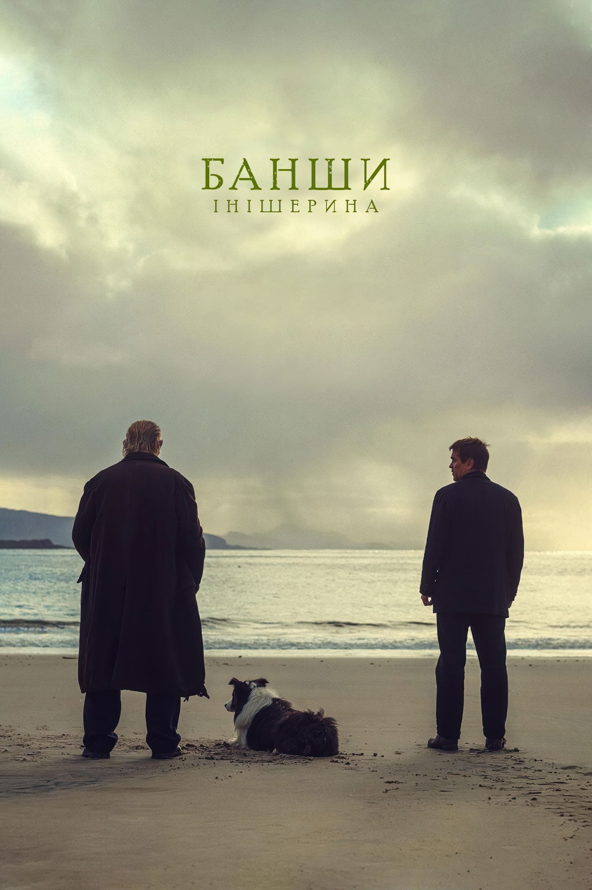
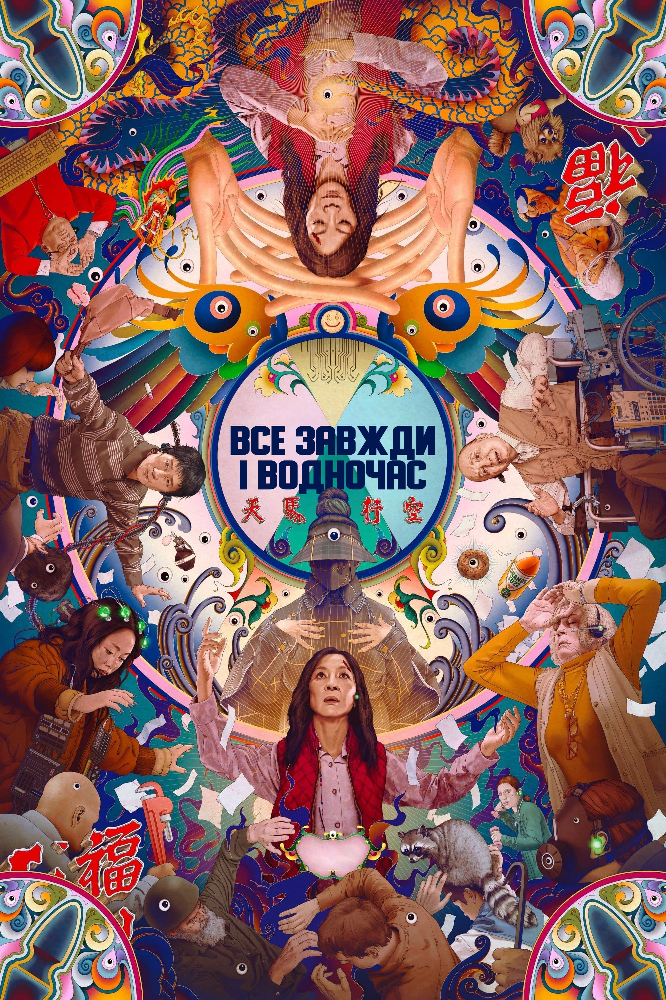

Зберігай кожен побачений фільм
Тренди тижня




Зберігай кожен побачений фільм
Додавай фільми до улюблених
Оцінюй по 5-зірковій шкалі
Переглядай особисту статистику
Не пропускай нові релізи
Зберігай фільми для майбутнього перегляду
Розпочніть з перегляду популярних фільмів та знайдіть там декілька фільмів, які ви вже бачили. Натисніть на символ ока на постері цих фільмів - так ви додасте фільм до переглянутих. Якщо вам цей фільм до вподоби, додайте його до улюблених- натисніть символ серця. Також, якщо навести на фільм - можна обрати оцінку. Якщо бажаєте зберегти фільм на потім - натисніть символ закладки, а потім зможете знайти його в профілі.
Чи зможу я знайти рекомендації для перегляду?
Чи є можливість використання сайту як стрімінгової платформи?
Чи можна вважати цей сайт за соціальну мережу?
Чи можу я імпортувати/експортувати історію переглядів?
Не втрачайте часу - станьте частиною нашої спільноти зараз!